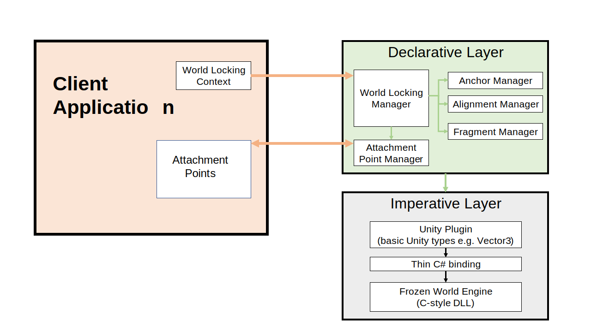

Architecture
The World Locking Tools for Unity architecture may be summarized by the following diagram.

In general, the client application will make its intent known declaratively through settings on the World Locking Manager.
The managers, in turn, imperatively drive the processing by lower layers.
While all World Locking Tools capabilities are available through asset creation in the Unity Editor, every effort has been made to provide equal access to construction and configuration from script. Any capability missing available in Unity's Inspector but not from the scripting API should be considered a code defect. Reporting is as a bug is appreciated! See contributing for more info.
An exception to this flow is in the attachment point mechanism, which is discussed in detail in several articles within this documentation. In short, the client requests attachment points from the World Locking Attachment Point Manager. These attachment points then serve as conduits through which the application may be informed about refit operations.
See also
- Attachment points
- WorldLockingManager
- IAnchorManager
- IFragmentManager
- IAttachmentPointManager
- IAlignmentManager
And in API reference: